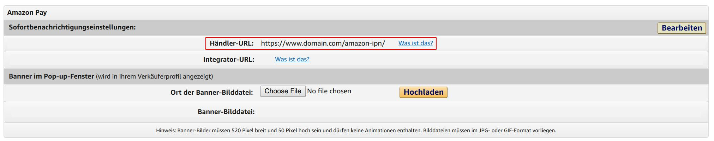

1. Einleitung
1.1 Features
✓ Dem Kunden wird es ermöglicht mit den Lieferadressdaten und Zahlungsarten aus deren Amazon Konto zu bezahlen
✓ Für die Artikeldetailseiten wird eine Expresskauf-Funktionen zur verfügung gestellt.
✓ Es existiert ein verkürzter Amazon Pay-Checkout
✓ Für die Artikeldetailseiten wird eine Expresskauf-Funktionen zur verfügung gestellt.
✓ Es existiert ein verkürzter Amazon Pay-Checkout
1.2 Unterschiede zum alten Plugin
Diese Version enthält nicht wie bisher eine eigene Checkout-Seite. Stattdessen findet die Auswahl der Versandadresse und des Zahlungsmittels direkt bei Amazon statt. Für den weiteren Checkout-Prozess wird dann der Shop-Standard verwendet. Dadurch ist eine nahtlosere Integration gewährleistet.1.3 Überblick Zahlungsablauf
Für die Einrichtung des Amazon Pay Plugins für XT:Commerce 3 ist es wichtig, zu verstehen, dass sich der
Zahlungsablauf in einem Detail etwas anders verhält als bei herkömmlichen Zahlungsanbietern.
Statt eines direkten Zahlungseinzugs findet vorerst eine Autorisierung statt, die für dich als Händler eine
Zahlungsgarantie bedeutet. Der eigentliche Zahlungseinzug ist ein eigener Schritt, der normalerweise bei
Versand der Ware ausgelöst werden sollte.
Umfangreiche Informationen findest du auf der Website von Amazon Pay.
Umfangreiche Informationen findest du auf der Website von Amazon Pay.
1.4 Download
2. Migration vom alten Plugin
2.1 Allgemeine Hinweise
Dieses Plugin ist eine vollständige Neu-Entwicklung und kein Update des bisherigen "Amazon Pay and Login with Amazon"-Plugins
2.2 Empfohlenes Vorgehen
- Bisheriges Amazon Pay Plugin als Zahlungsart deaktivieren oder deinstallieren
- Alte Plugin-Dateien löschen und Datei-Änderungen rückgängig machen, wenn gewünscht (dieser Schritt ist technisch nicht notwendig)
- Neues Plugin installieren (siehe 3.)
3. Plugin-Setup
3.1 Systemvoraussetzungen
✓ XT:Commerce 3
✓ PHP 5.6 oder höher
Hinweis: Das Plugin wurde für das Template "xtc4" entwickelt. Wenn Sie ein anderes Template verwenden, sind ggf. Anpassungen an der Konfiguration und zusätzliche Individualisierungen notwendig. Wenden Sie sich ggf. an Ihren Template-Hersteller.
✓ PHP 5.6 oder höher
Hinweis: Das Plugin wurde für das Template "xtc4" entwickelt. Wenn Sie ein anderes Template verwenden, sind ggf. Anpassungen an der Konfiguration und zusätzliche Individualisierungen notwendig. Wenden Sie sich ggf. an Ihren Template-Hersteller.
3.2 Vor der Installation
Erstelle bitte ein Backup Deines Shops, oder nutze (noch besser) eine separate Entwicklungskopie, bevor Du mit der Installation startest.
3.3 Plugin-Installation
Du erhältst das Amazon Pay Plugin für XT:Commerce 3 am einfachsten auf Github.
Es enthält neue Dateien und Dateiänderungen, die du anhand der beiliegenden Anleitung ausführen musst.
Es enthält neue Dateien und Dateiänderungen, die du anhand der beiliegenden Anleitung ausführen musst.
Gehe anschließend im Administrationsbereich auf den Menüpunkt Module » Zahlungsoptionen. Dort angekommen aktiviere den Eintrag "Amazon Pay". Anschließend klickst Du bitte auf den Button Installieren.
Das Modul für Amazon Pay ist nun installiert. Du kannst nun mit Konfigurieren fortfahren.
Das Modul für Amazon Pay ist nun installiert. Du kannst nun mit Konfigurieren fortfahren.
3.4 Amazon Pay Account anlegen
Wenn du noch keinen Amazon-Pay Account hast, kannst du dich hier registrieren.
3.5 Einrichtung in Sellercentral und Zugangsdaten
3.5.1 Zugangsdaten
3.5.2 IPN (Sofortbenachrichtigung)
Die Einrichtung der IPN (Instant Payment Notification = Sofortbenachrichtigung) ermöglicht es, dass dein
plentymarkets-System in Echtzeit über Statusänderungen einer Zahlung informiert wird.
Wähle dazu den Menüpunkt Einstellungen » Integrationseinstellungen und hinterlege bei
"Händler-URL"
https://www.domain.com//callback/amazon_pay/ipn.php (www.domain.com bitte durch deine Shop-Domain ersetzen)

3.6 Weitere Plugin-Konfiguration
Die weiteren Konfigurationsmöglichkeiten im XT:Commerce 3 Plugin ermöglichen Dir, das Verhalten des Plugins
an Deine Prozesse anzupassen.
- Amazon Pay aktivieren
- Erlaubt es, das Plugin vorübergehend zu deaktivieren
- Anzeigereihenfolge
- Erlaubt es, die Reihenfolge der Anzeige festzulegen. Die kleinste Ziffer wird zuerst angezeigt.
- Live/Sandbox
- Schaltet das Plugin in den Sandbox-Modus. Dabei werden keine echten Zahlungen ausgelöst. Bitte beachte, dass es für den Sandbox-Modus in Sellercentral eigene Konfigurationsmöglichkeiten gibt und du zum Testen keine echten Amazon-Accounts verwenden kannst, sondern dir einen eigenen Testaccount in Sellercentral anlegen musst.
- Debug-Modus (Buttons verstecken)
- Versteckt die Buttons im Frontend mit CSS (display:none), sodass du im Frontend testen kannst, ohne dass deine Kunden beeinträchtigt werden.
- Erlaubte Zonen
- Gebe einzeln die Zonen an, welche für dieses Modul erlaubt sein sollen. (z.B. AT,DE (wenn es leer bleibt, dann werden alle Zonen erlaubt))
- Farbe des Amazon-Checkout-Buttons
- Hier kannst Du die Farbe des Amazon-Checkout-Buttons wählen.
- Farbe des Amazon-Login-Buttons
- Hier kannst Du die Farbe des Amazon-Login-Buttons wählen.
- Status für autorisierte Bestellungen
- Hier kannst du einen Bestellstatus wählen. Diese wird nach erfolgreicher Autorisierung gesetzt, um zu signalisieren, dass die Ware versendet werden kann.
- Status für Bestellungen mit abgelehnter Zahlung
- Hier kannst du einen Bestellstatus wählen. Diese wird bei vollständiger Ablehnung der Zahlung gesetzt. In diesem Fall solltest du Kontakt mit dem Kunden aufnehmen, um einen alternativen Zahlungsweg z.B. per Überweisung anzubieten. (siehe hierzu auch 4.)
- Status für Bestellungen mit eingezogener Zahlung
- Hier kannst du einen Bestellstatus wählen. Diese wird bei eingezogener Zahlung gesetzt.
- Art des Zahlungseinzugs
-
Hiermit kannst du einstellen, wann der Zahlungseinzug durchgeführt werden soll. In den allermeisten
Fällen ist der Einzug zum Zeitpunkt des Versands die beste Möglichkeit.
Bei Download-Produkten empfiehlt sich der Einzug direkt nach Autorisierung. - Status für versendete Bestellungen
- Hier kannst du einen Bestellstatus wählen. Diese wird nach dem Versand der Ware gesetzt.
5. Loslegen
Damit sollte alles erledigt sein, um Deinen Kunden ein reibungsloses Amazon Pay Einkaufserlebnis zu
bieten.
Wenn du Fragen, Probleme oder Anregungen hast, kontaktiere uns am besten über die E-Mailadresse support@alkim.de.
Wenn du Fragen, Probleme oder Anregungen hast, kontaktiere uns am besten über die E-Mailadresse support@alkim.de.
6. Häufige Fehler
Es sind bisher keine Fehler bekannt
7. FAQ
Warum sind die Adressfelder manchmal falsch befüllt? (z.B. Straße als Firmenname)
Die Adresse (einschließlich Firmenname) wird von Amazon ohne explizite Kennzeichnung in bis zu 3 Zeilen aufgeteilt. Das Plugin teilt diese nach Best Practice in die Adressfelder von plentymarkets auf, kann aber leider keine 100%ige Zuordnung garantieren.
Impressum
Verantwortlich für die Inhalte dieser Webseite gemäß § 6 Teledienstgesetz (tdg): Fa. alkim media • Inhaber: Frau Thekla Alkim • Perleberger Straße 62b • 16866 Kyritz • E-Mail: info@alkim.de • Telefon: 033971-604480 • Telefax: 033971-32263
Verantwortlich für die Inhalte dieser Webseite gemäß § 6 Teledienstgesetz (tdg): Fa. alkim media • Inhaber: Frau Thekla Alkim • Perleberger Straße 62b • 16866 Kyritz • E-Mail: info@alkim.de • Telefon: 033971-604480 • Telefax: 033971-32263